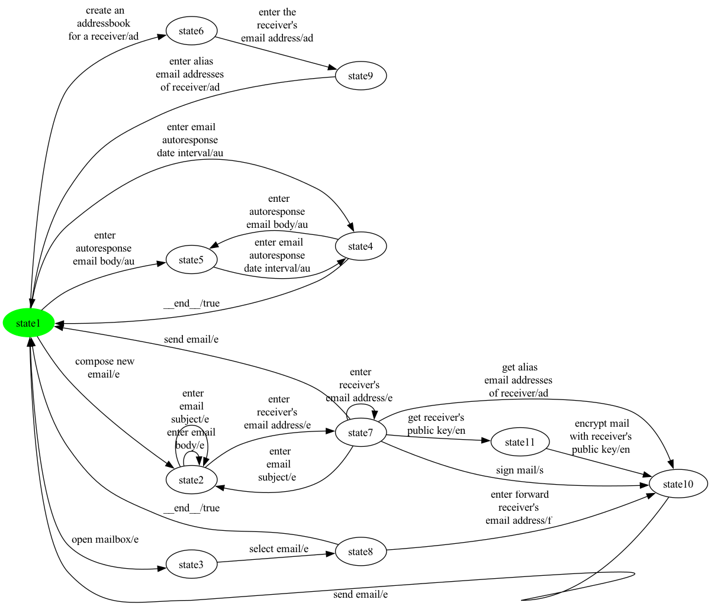
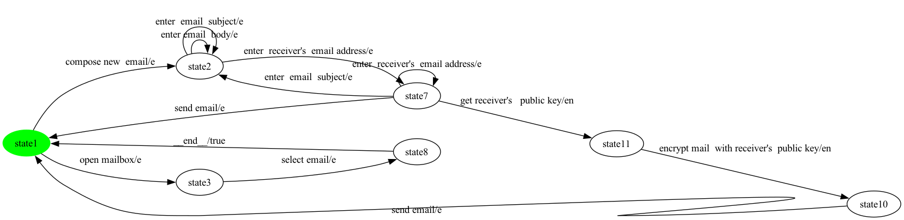
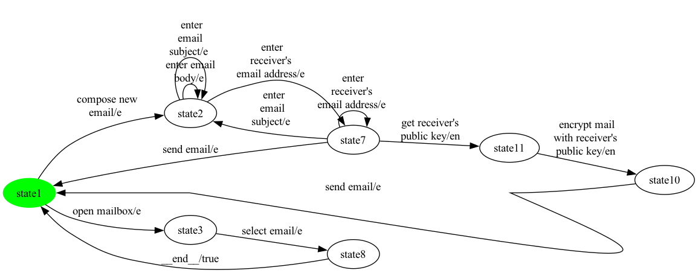
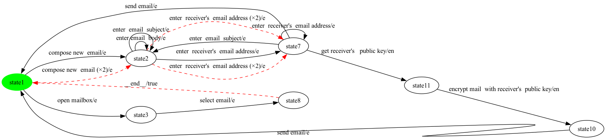

Four-stage rendering of the full conversion-to-balancing pipeline on one hand-picked product of eMail. Each step shows the FTS as a PNG and a one-paragraph summary of what changed.
Chosen configuration: selected = {e, en}
Size: 11 states, 24 transitions
Bisimulation-minimized FTS produced by MxeToFtsConverter. Feature expressions are retained on every transition for traceability. Synthetic '__end__' transitions (back-to-INIT for mixed-terminal ESG vertices) appear here if the source ESG has any '['-only-edge vertices.

Size: 7 states, 13 transitions
FExpressionPreservingProjection keeps transitions whose feature expression evaluates to true under the configuration. 11 transition(s) dropped relative to step 1. Resulting graph has 1 strongly-connected component(s). If that count is 1 the next step is a no-op; otherwise it removes the parts of the graph the initial state cannot reach AND return from.

Size: 7 states, 13 transitions
InitialSccFilter keeps only the SCC containing the initial state and drops every other state plus the transitions touching them. 0 state(s) and 0 transition(s) removed. Result is strongly connected by construction — every state can reach every other state.

Size: 7 states, 16 transitions
EulerianBalancer applies a directed Chinese Postman strategy: for each pair of imbalanced states it finds a shortest path of real transitions and doubles each transition along it (action label is suffixed with '__dup__N'). The cycle thus stays contiguous and every traversal is a real action. 3 doubled transition(s) inserted (dashed-red in the image); 0 direct synthetic fallback edge(s) when no real path existed; 13 original transition(s) preserved; 7 total state(s). The doubled edges are filtered from coverage measurement (their action carries the '__dup__' marker), but they DO appear in the test case as another occurrence of the underlying real action — a property useful for mutation detection.
